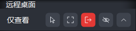
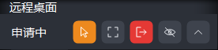
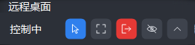
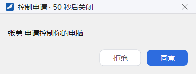
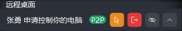
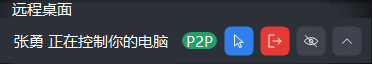

远程桌面
远程桌面让你在征得同事同意后查看同事的整个屏幕；同事再同意你的控制申请后，你还可以用自己的鼠标和键盘直接操作同事的电脑，适合远程协助排查问题、帮同事完成设置。
- 适用：全体员工
- 需要：双方都在线；被控制的一方先点「接受」让你查看，要操作对方的电脑还需对方同意控制申请
- 入口：单聊窗头部的「远程桌面」按钮
发起远程桌面请求
- 打开与对方的单聊窗，点头部右侧的显示器图标（鼠标停在上面提示 远程桌面）。它位于电话、摄像机两个图标的右边。
- 屏幕上出现等待窗口「正在呼叫 某某，等待对方接受…」。对方回应之前，可以点 取消 撤回请求。
- 对方点 接受 后，你的电脑上会打开远程桌面窗口，显示对方的屏幕。这时你只能查看，见下文申请与交还控制。


被请求的一方会收到「某某 请求查看你的桌面。接受后对方只能查看，要控制你的电脑还需你另外同意」窗口，点 接受 同意，点 拒绝 拒绝。对方拒绝、取消、不在线或长时间没有回应时，发起方会看到相应的提示，例如「对方拒绝了远程桌面请求。」「远程桌面请求超时。」
远程桌面窗口
远程桌面窗口里显示的是对方的整个屏幕，按原来的宽高比显示，窗口比例不同时四周留黑边；对方的鼠标指针也画在画面上。标题栏显示对方屏幕的分辨率、当前帧率和每帧的数据量，如「远程桌面 1920×1080 5 fps 帧 2 KB」；画面左上角显示「P2P」时，说明双方是直接连接，没有经过服务器中转。
双方都使用新版本客户端、电脑也支持时，对方的屏幕以视频方式传输：色彩完整，画面最宽 2560 像素（对方屏幕更大时按比例缩小显示，鼠标位置仍然准确），每秒最多 30 帧，鼠标指针跟手；网络变差时会自动降低清晰度，网络恢复后再逐步提高。对方屏幕没有变化时不传画面，标题栏的帧率会降到很低，这是正常现象。任何一方是旧版本、或电脑缺少视频解码功能时，自动改用原来的传输方式，照常可用，只是色彩较少、帧率较低。

画面顶部有一条浮动工具条，窗口方式和全屏都是这一条。左侧是当前状态（「仅查看」「申请中」「控制中」），按钮是图标，鼠标停在上面会显示名称：
| 按钮 | 作用 |
|---|---|
| 申请控制 / 取消申请 / 结束控制 | 申请操作对方的电脑；申请中再点是撤回申请；控制中再点是交还控制，见下文 |
| 全屏 / 退出全屏 | 在全屏和窗口方式之间切换；也可以按 F11，全屏时按 Esc 退出全屏 |
| 断开 | 结束这次远程桌面，关闭窗口 |
| 隐藏 | 把工具条完全藏起来，鼠标移到画面顶边时临时出现 |
| 收起 | 把工具条收成顶部的小把手 |
申请与交还控制
- 点工具条上的 申请控制，按钮变成橙色（提示「取消申请」），状态显示「申请中」，等待对方同意。
- 对方同意后，按钮变成蓝色（提示「结束控制」），状态显示「控制中」。这时你在画面上移动鼠标、单击、拖动和打字，操作的都是对方的电脑。
- 对方拒绝或收回控制时，状态区会短暂提示「对方拒绝了你的控制申请」「对方收回了控制」，随后回到「仅查看」。
- 操作完成后点 结束控制 交还控制，远程桌面仍然保持，你继续只能查看。



只能查看的时候，画面上的鼠标和键盘操作都不会发给对方。
被控制的一方
接受请求后，被控制一方的屏幕顶部会出现一条置顶的工具条，写明谁在查看或控制你的电脑，直连时还显示「P2P」。工具条上有 允许控制 / 收回控制、红色的 结束远程桌面，以及 隐藏、收起。这条工具条不会出现在对方看到的画面里。

处理控制申请
- 对方申请控制时，屏幕右下角弹出「某某 申请控制你的电脑」，点 同意 或 拒绝；60 秒内不处理按拒绝处理，对方撤回申请时提示自动关闭。工具条同时显示「某某 申请控制你的电脑」，按钮变成橙色。
- 不用等对方申请，也可以直接点工具条上的 允许控制。
- 对方控制期间，工具条显示「某某 正在控制你的电脑」，按钮变成蓝色的 收回控制，点它立即收回。被控制期间你照常可以使用鼠标和键盘。



结束远程桌面
双方都可以随时结束：
- 发起方关闭远程桌面窗口，或在工具条上点 断开。
- 被控方点工具条上的 结束远程桌面。
任何一方结束后，这次远程桌面即告结束，被控方屏幕顶部的工具条随之消失。被控方使用客户端的「锁屏」功能时，正在进行的远程桌面也会立即结束。